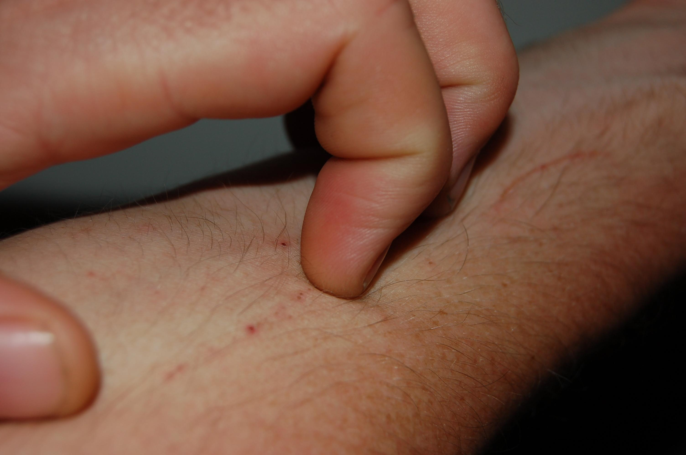

Morgellons Disease
Rajeswari Ramanathan
Spring 2012

After long hours of not touching a certain part of the body, it begins
to itch. This is completely normal- as humans, we scratch ourselves
every day in almost every part of the body. But just imagine if you
felt this way every second of your day. Imagine having the feeling of
something crawling under your skin and the need to tear it out. Sounds
normal? Probably, not.
This crawling sensation is formally known as
Morgellons disease. Morgellons disease gives patients the sensation
that something is constantly crawling under their skin. Patients often
end up with open sores and dried scabs. The Center for Disease Control
(CDC) recently reported that many patients have physically pulled sacks
of fibrous material from under their skin. However, Morgellons has not
been considered an official medical disease because there are no
indications of pain or vital signs showing that there is a problem. In
fact, doctors say that the fibers, such as nylon and cotton, are not
coming from within the skin, but actually from the tidbits of their
clothes. When tested for other medical side effects, patient results
return completely normal yet they continue to report feelings of a
crawling sensation. Patients feel that doctors do not fully understand
the situation since doctors usually say that patients simply dramatize
the feelings. While it seems like a physical condition, doctors are
denying such an issue. Who is to believe?
Instead of having patients receive actual medical
care, doctors are sending their patients to psychiatrists, who can then
probe patients’ minds for any traumatic memories. Most psychiatrists
say that people with too much mental stress create the crawling
sensation in their brain because they cannot tolerate their work.
Seeing a psychiatrist may help some patients, but doctors are looking
to see trends in the similarities of the problems their patients face.
This issue has been debated for several years on whether Morgellons is
an actual medical condition or a delusion, and doctors still have not
come to a strong conclusion. Yet, some have new theories behind
Morgellons.
Dr. Omar Amin, a parasitologist from Arizona, argues
that this is a neurological problem for people who have too much
mercury toxicity. Dr. Amin believes that patients with mercury toxicity
face similar symptoms such as scratching and crawling. While many other
physicians disagree with his prediction, Dr. Amin has cured several
Morgellons patients using a lymphatic drainage massage, a method used
to treat mercury toxicity. However, a recent study conducted by the CDC
suggests that Morgellons might actually be linked to psychology.
In the CDC’s study of 3.2 million Kaiser Permanente
patients in Northern California, 115 of them had reported symptoms of
Morgellons. Yet, when these 115 patients (primarily middle-aged
Caucasian women) were examined closely, it was found that most of them
were fatigued and weak and suffered from at least one medial or
psychological condition (often being depression). More than half had
signs of drug usage from their hair sample. Thus, these were not just
any ordinary sample of patients- they were psychologically traumatized
by something and literally scratched away their pain, hallucinating
something to be crawling under their skin.
Even then, there is no designed treatment,
psychological or medical, for Morgellons. In addition to the sensation
of crawling, patients would also suffer from infected scabs and open
cut sores, which is problematic in their being socially active and
running a successful family. Doctors are calling this sensation to be
psychosomatic (seeing something in their body is actually perceived to
be there by the brain). It is a dangerous condition, and people are not
aware of a proper way of getting help. There are no specific cures or
treatments authorized by the CDC, so many patients have to visit
psychiatrists and massage therapists. The CDC is asking everyone who
feels similar symptoms to report them so that they can learn more about
the process of this issue. Even though this condition is still being
studied and has no medically approved solution, it is important to take
immediate action and consult with a physician so that they can also
learn more about your symptoms. The first time you scratch yourself may
seem completely normal, but you never know when it is just an itch or a
Morgellons itch.
About the Author
Rajeswari Ramanathan, class of 2015, is an Integrative Biology major, hoping to study medicine in the future.